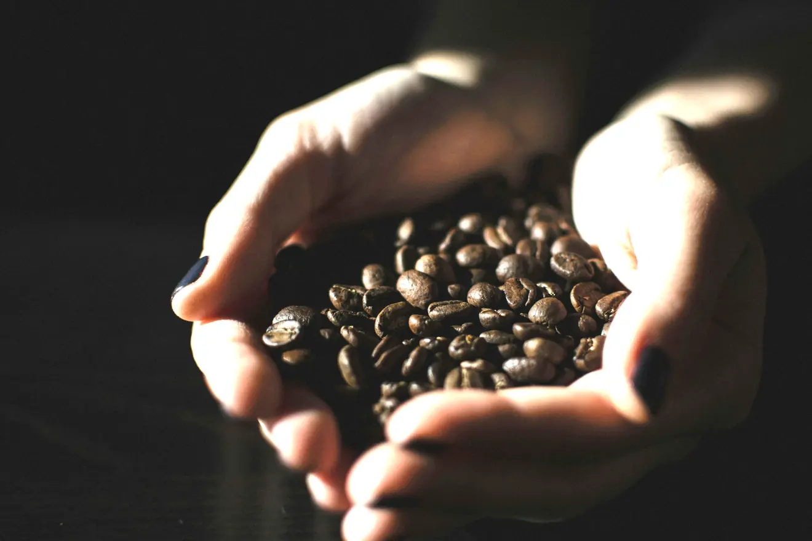
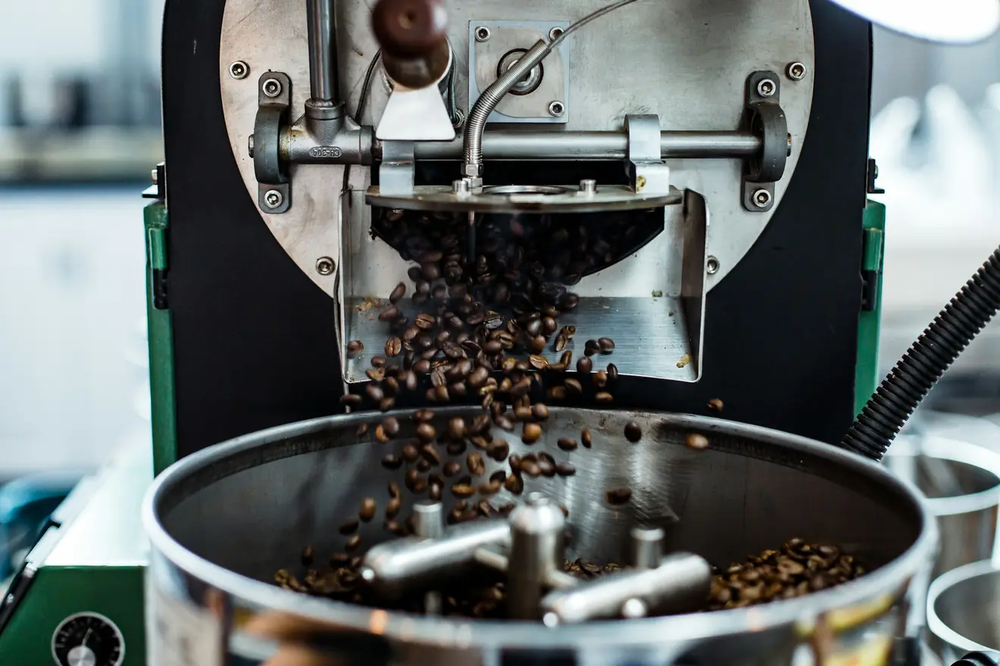
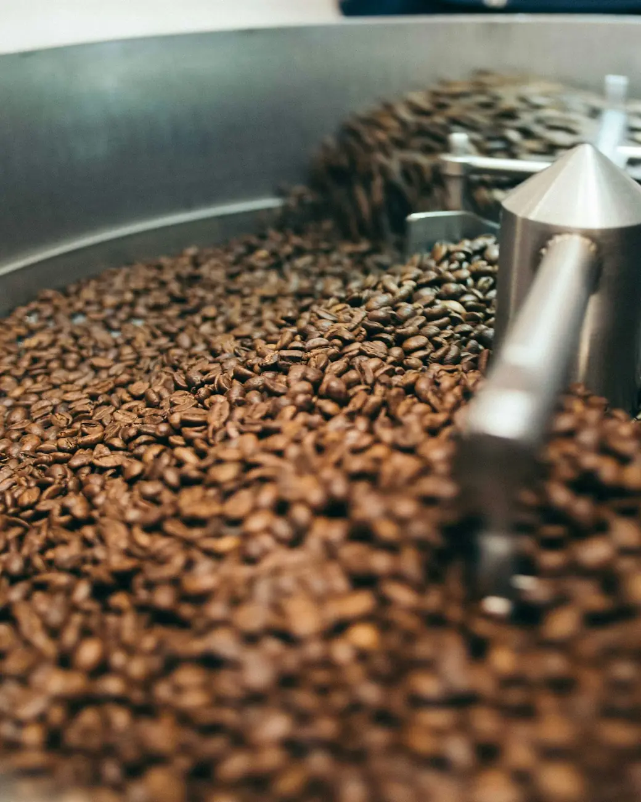
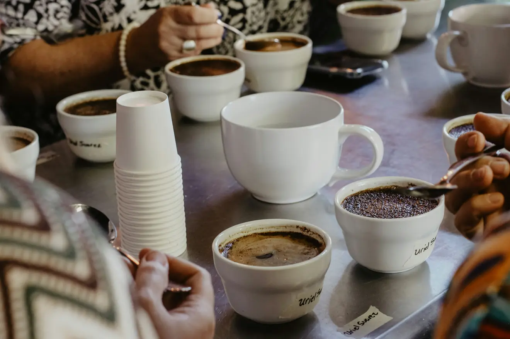

Im Regal
Vier Kaffees, ein Röster.
Mehr sind es absichtlich nicht. Vier Kaffees kann man kennen; zwanzig kann man nur verwalten.


Ganze Bohnefrisch aus der Trommel

Mahlgradkurz vor dem Aufguss

Verkostungjede Charge wird probiert
Alle Sorten gibt es als 250-Gramm-Packung und als Kilo. Ganze Bohne, oder auf Wunsch gemahlen — dann sagen Sie bitte, womit Sie aufbrühen.
Zubereitung
Welcher Kaffee wofür?
Werkstatt oder Hafenkante. Beide halten Druck aus und brechen in Milch nicht weg. Nordlicht ist dafür zu hell geröstet — sie wird im Siebträger sauer.
Nordlicht. Grob mahlen, Wasser bei etwa 94 Grad, drei Minuten Gesamtzeit. Als Verhältnis: 60 Gramm auf den Liter.
Hafenkante. Sie verzeiht Schwankungen im Mahlgrad, und genau die hat jeder Vollautomat.
Stillstand oder Hafenkante, grob gemahlen, vier Minuten ziehen lassen, dann abgießen statt stehen lassen.